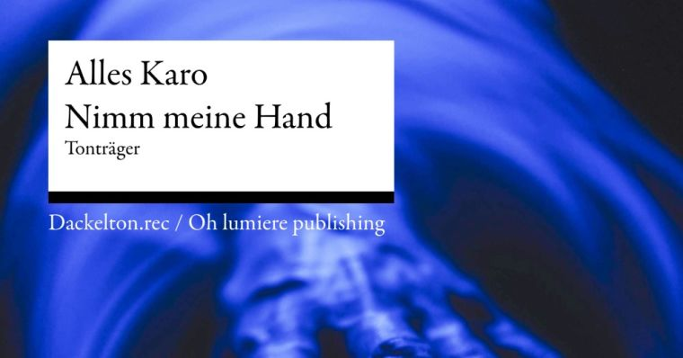
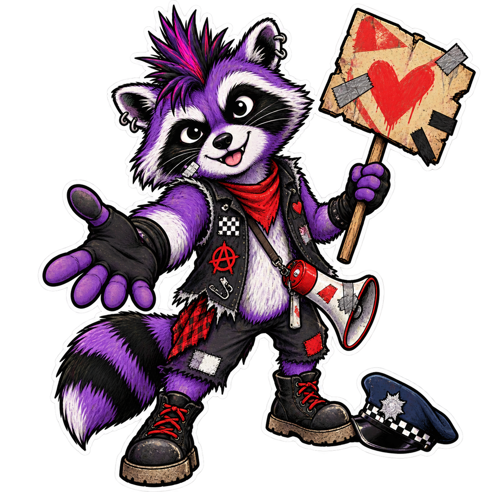

Vorab gehört
ALLES KARO - Nimm meine Hand

Hinweis: "Nimm meine Hand" erscheint offiziell am 15.09.2026. Dieser Text basiert auf vorab zur Verfügung gestelltem Material. Wer den Song vormerken möchte, kann ihn über orcd.co/nimmmeinehand pre-saven.

Bevor bei ALLES KARO der Aufstand losgeht, wird erst einmal höflich der Oberkommissar begrüßt.
Man hat schließlich Manieren.
Der deutsche Aufstand hat offenbar Bürozeiten.
Das ist schon ein ziemlich schöner Einstieg. Nicht, weil ich jetzt plötzlich Dienststellenromantik entwickelt hätte. Keine Sorge. Aber weil der Song sofort dieses merkwürdige Bild aufmacht: Da wollen Leute laut werden, üben sogar schon den Aufstand, und trotzdem guckt erst einmal keiner hin.
Das ist entweder schöne Selbstironie oder die versehentliche Zusammenfassung von erstaunlich vielen politischen Punksongs.
In beiden Fällen sitze ich ein Stück gerader da.
ALLES KARO haben mit "Nimm meine Hand" einiges vor. Laut Pressetext soll die Nummer Menschen aus der Ohnmacht holen, zusammenbringen und auf die Straße treiben. Bassist Sven Paulsen fasst das mit dem gemeinsamen Bewirken zusammen.
Kann man als großen Satz nehmen.
Kann aber auch nach sehr viel Plenum riechen, wenn man nicht aufpasst.
Zum Glück klingt der Song nicht nach Sitzkreis mit Moderationskarten. Da stehen Sirenen, Flaggen, Plakate, Teer, Feuer und eine Faust schon bereit. Das Protestinventar ist also vollständig. Fehlt nur noch jemand, der fragt, wer die Kabeltrommel eingepackt hat.
Interessant finde ich, dass ALLES KARO gar nicht versuchen, einen einzelnen Missstand festzunageln.
Die Wut bleibt offen.
Das passt hier. Vermutlich kennt jeder irgendeinen Grund, bei Nachrichten gelegentlich mit dem Kopf auf die Tischplatte zu wollen. Der Song startet nicht bei der fertigen politischen Antwort. Er startet eher bei diesem Punkt, an dem man merkt:
Ich bin mit diesem Gefühl nicht alleine.
Und ja, das darf ruhig etwas groß gedacht sein.
Punkrock wäre auch ziemlich langweilig, wenn er nur noch realistische Verwaltungsziele formulieren würde. "Wir fordern eine sachgerechte Prüfung der Zuständigkeit" lässt sich halt beschissen mitgrölen.
Der Refrain setzt auf einen einfachen Gedanken: Menschen, die sich nicht kennen, laut und unperfekt, aber eben zusammen. Keine fertige Bewegung mit allen Antworten in der Tasche. Erst einmal Leute, die sich gegenseitig die Hand reichen und gemeinsam Krach machen.
Das ist nicht neu.
Muss es auch nicht sein.
Manchmal reicht ein Refrain, der genau weiß, wofür er gebaut wurde. Nicht für das Feuilleton. Nicht für zwölf Absätze Analyse mit schlauem Gesicht. Eher für den Moment, in dem aus drei vereinzelten Stimmen plötzlich ein Haufen wird.
Ob "Nimm meine Hand" wirklich der Soundtrack zur nächsten Demo wird, entscheiden am Ende die Leute vor den Lautsprechern.
ALLES KARO liefern jedenfalls genug Einladung, damit man den Arm nicht nur verschränkt, sondern vielleicht doch mal ausstreckt.
Und falls ihr den Song vormerken wollt:
Nur den Oberkommissar hätte man dafür nicht unbedingt vorher anmelden müssen.